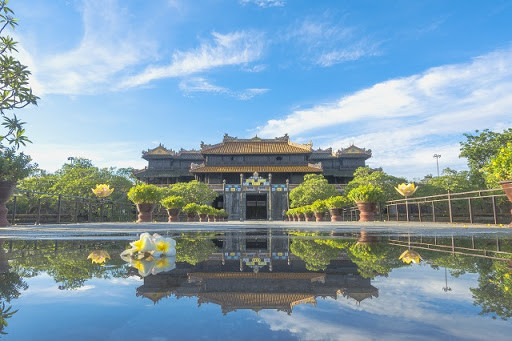

Quần Thể Di Tích Cố Đô Huế

Quần Thể Di Tích Cố Đô Huế
Quần thể di tích Cố đô Huế hay Quần thể di tích Huế là những di tích lịch sử - văn hoá do triều Nguyễn chủ trương xây dựng trong khoảng thời gian từ đầu thế kỷ 19 đến nửa đầu thế kỷ 20 trên địa bàn kinh đô Huế xưa, nay thuộc phạm vi thành phố Huế và một vài vùng phụ cận thuộc tỉnh Thừa Thiên-Huế, Việt Nam.
Phần lớn các di tích này nay thuộc sự quản lý của Trung tâm Bảo tồn Di tích Cố đô Huế và được UNESCO công nhận là Di sản Văn hoá Thế giới vào ngày 11 tháng 12 năm 1993. Hiện tại, cố đô Huế đã được thủ tướng chính phủ Việt Nam đưa vào danh sách xếp hạng 62 di tích quốc gia đặc biệt quan trọng.
Quần thể di tích Cố đô Huế có thể phân chia thành các cụm công trình gồm các cụm công trình ngoài Kinh thành Huế và trong Kinh thành Huế.
Hoàng Thành
Là vòng thành thứ hai bên trong kinh thành Huế, nơi ở của vua và Hoàng gia, cũng là nơi làm việc của triều đình. Ngoài ra Hoàng thành Huế còn là nơi thờ tự tổ tiên và các vị vua nhà Nguyễn.
Hoàng Thành được xây dựng năm 1804, nhưng để hoàn chỉnh toàn bộ hệ thống cung điện với khoảng hơn 100 công trình thì phải đến thời vua Minh Mạng vào năm 1833, mọi việc mới được hoàn tất. Hoàng Thành có 4 cửa được bố trí ở 4 mặt, trong đó cửa chính (ở phía Nam) là Ngọ Môn.
Bên trong Hoàng thành có Điện Thái Hoà, là nơi thiết triều; khu vực các miếu thờ; và Tử Cấm thành - nơi ăn ở sinh hoạt của vua và hoàng gia. Người ta thường gọi chung Hoàng Thành và Tử Cấm Thành là Đại Nội.
Tử Cấm Thành
Là vòng thành trong cùng, nằm trong Hoàng thành. Tử Cấm thành nguyên gọi là Cung Thành, được khởi công xây dựng từ năm Gia Long thứ 2 (1803), năm Minh Mạng thứ 2 (1821) đổi tên thành Tử Cấm Thành.
Thành có hình chữ nhật, cạnh nam và bắc dài 341m, cạnh đông và tây dài 308m, chu vi 1300m. Ở mặt trước, phía nam là cửa chính là Đại Cung Môn.
Mặt bắc có 2 cửa Tường Loan và Nghi Phụng, thời Bảo Đại, sau khi xây lầu Ngự Tiền Văn Phòng mở thêm cửa Văn Phòng.
Mặt đông có hai cửa Hưng Khánh và Đông An, về sau lấp cửa Đông An, mở thêm cửa Duyệt Thị ở phía đông Duyệt Thị Đường. Mặt tây có 2 cửa: Gia Tường và Tây An.
Bên trong Tử Cấm thành bao gồm hàng chục công trình kiến trúc với quy mô lớn nhỏ khác nhau, được phân chia làm nhiều khu vực.
Trường Quốc tử Giám
Từ thế kỷ XI đến thế kỷ XVI, Văn Miếu - Quốc Tử Giám ở Thăng Long - Hà Nội là trung tâm của cả nước về giáo dục. Sang thế kỷ XVIII, do sự phân chia đôi miền Đàng Trong và Đàng Ngoài nên việc giáo dục theo đó cũng tách biệt. Ở Đàng Trong, chúa Nguyễn Phúc Nguyên (1613 - 1635) tổ chức bộ máy chính quyền riêng ở đất Thuận - Quảng và cho mở trường Văn miếu dạy học ngay tại phủ chính, để dạy các công tử cùng con em quan lại. Giáo sĩ Chritofo Borri có mặt ở Đàng Trong trong thời gian từ năm 1614 - 1626 đã ghi nhận đôi điều về vấn đề này như sau: “đã thấy nhiều trường học bậc đại học với nhiều giáo sư cùng các cuộc thi hạch các cấp y như ở Trung Quốc”.